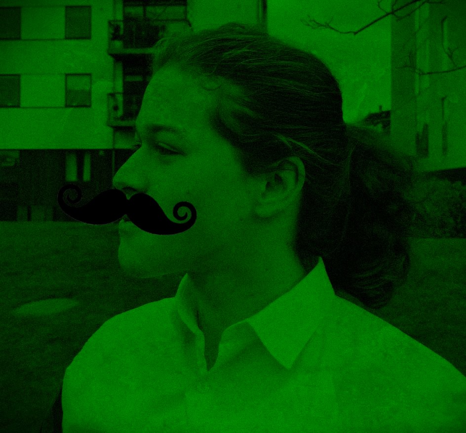

Welcome to the enchanting green paradise of Cloverville!

Green Bob, founder and pioneer
About Our Mission
Welcome to the official webpage of the Cloverville community! At Cloverville, we have a concentrated
focus on taking care of our planet and eco-friendly actions. We are a close-knit community of environmental
activists, and we would like to set an example for the rest of the world with our green actions. Together,
we engage in sustainable practices, such as cycling, recycling and subsistence farming. We record our green
activities, and we developed our own point system, which rewards eco-friendly behavior. This webpage shows a
list of our many sustainable actions, which we hope will be an inspiration for the rest of the world. Furthermore,
the point system is a great new opportunity for our members to trade amongst each other, and the current trade
offers can also be viewed on this site. Our goals and ambitions are supported by a digital program called
GreenThumb, which enables us to pursue our dream of a cleaner and greener world.
The Story of Cloverville
It was the year 1967, and a seven year old boy named Robert Green dreamed of one day creating a paradise
for environmentally-friendly people. Years later, that boy founded Cloverville. These days, he is
affectionately called “Green Bob”, and he is the coordinator and the mastermind behind our mission.
From a small village of 5 people, Cloverville has grown into a bustling metropolis of 42 people. Here,
we all pitch in, whether it be growing all our vegetables together, or sharing our egg cartons or our
avocado trees. Green Bob continues to innovate new ideas and there is always something exciting happening here.